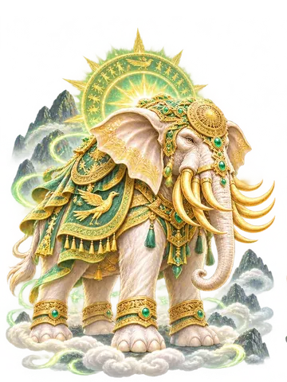
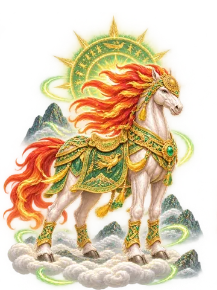
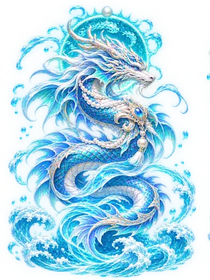

Thế giới Sơn Hà
Đất Văn Lang ba nghìn năm sau ngày Lạc Long Quân trấn yêu. Đông Sơn chứ không phải điện ngói: nhà sàn mái thuyền, mặt trời trống đồng, chim Lạc bay vòng.
Hai tông môn
Sơn Tông Núi Thánh
Môn phái tu tiên trên núi Tản, giữ mạch linh khí của núi. Đứng đầu là Chưởng Môn, kế là Tả Hữu Hộ Pháp, rồi Tứ Trấn Ba Vì (Trấn Đông, Tây, Nam, Bắc). Thần thú hộ sơn: Voi Chín Ngà, Ngựa Chín Hồng Mao.
Thủy Tông Long Cung
Triều đình dưới nước của Long Cung, giữ long mạch dưới đáy biển. Đứng đầu là Long Soái, kế là Tả Hữu Hộ Pháp, rồi Tứ Tuần (Tuần Giang, Hồ, Đầm, Hải). Thần thú hộ sơn: Giao Long, Rùa Thần.
Chức vụ theo cảnh giới
Cảnh giới càng cao, chức càng lớn, ngồi càng cao trên kim tự tháp — như điện môn phái: chức lớn ngồi trên, đệ tử ngồi dưới. Không người nào mang danh Sơn Tinh, Thủy Tinh hay Long Vương: đó là thần.
| Cảnh giới | Sơn Tông | Thủy Tông |
|---|
Thang Trời mười bậc
Lệ chung của Thiên Đình cho mọi kẻ tu. Bậc càng cao, áo thêm chứ không thay: thêm lớp lụa, thêm đồ đồng, mũ lông chim cao hơn. Nhìn một người là đoán được bậc. Từ Nguyên Anh, muốn qua phải chịu lôi kiếp.
Địa danh
Sảnh Thiên Vấn
Biển mây trước ba đỉnh Ba Vì, Long Cung bên phải. Nơi hai tông cùng nghe Ngọc Phả hỏi.
Núi Tản — đạo trường Sơn Tông
Cổng chim Lạc, cờ xanh, quảng trường mặt trống đồng. Nơi Tụ Linh Trận của Sơn Tông.
Long Cung — đạo trường Thủy Tông
Cung ngọc trai, cổng vỏ sò, quảng trường vòng sóng dưới đáy biển.
Đàn tế đỉnh Tản
Mặt trống đồng khổng lồ trên đỉnh gần trời nhất. Nơi lôi kiếp giáng xuống.
Cửa sông mùa lũ
Chỗ nước gặp núi. Mỗi năm một lần, đồ đệ hai tông quyết đấu ở đây.
Địa Cung Đồng Cổ
Lò đúc đồng của các vua Hùng bị lũ vùi. Cửa hang chỉ lộ khi nước rút.
Thành Trì Tự Do
Chợ trên bãi phù sa giữa núi và biển. Thiên Đình giữ cho trung lập: không ai rút gươm.
Biển Đông
Nơi đuôi Ngư Tinh chìm. Oán khí của nó bị trấn ngoài khơi.
Hồ Tây
Hang cáo cũ bị nước phá thành đầm lớn. Đêm trăng sương tím, sen nở.
Rừng già Phong Châu
Gốc chiên đàn nghìn năm. Sương xanh, rễ bò như tay.
Một năm ở Sơn Hà
Ở Sơn Hà, một giờ live là một năm. Năm nào cũng lũ — "tháng bảy kiến bò, chỉ lo lại lụt". Mỗi việc trong năm sinh ra thứ việc sau cần.
Hai tông nhận người tự tìm được cửa. Phàm nhân vượt mê cung để thành đệ tử. Giữa năm, ải còn mở xen cho người mới tới.
Ngọc Phả hỏi, ai đáp đúng được rót linh khí; mỗi câu đúng bồi Linh Mạch cho tông. Ai chạm ngưỡng thì tự bước qua cửa đột phá; từ Nguyên Anh thì lên đàn tế chịu lôi kiếp.
Thủy Tinh dâng nước, Sơn Tinh dời núi — nhưng chỉ đồ đệ được ra trận. Linh Mạch kết trận pháp; phe thắng đẩy thế trận mùa.
Lũ rút, cửa Địa Cung lộ ra. Hai tông tranh nhau xuống nhặt binh khí, giáp đồng.
Chợ phiên sau lũ. Mua đan ở Đan Các, học chiêu ở Tàng Kinh Các.
Lũ xói đất, phong ấn vốn đã yếu càng hở. Tông khắc con yêu ấy ra tay; hai tông tạm gác thù.
Đất sụt sau trận đánh yêu, hang mở lại một lần — nhặt chiến lợi phẩm.
Nước dâng thì Thủy Tông thắng năm, núi cao thì Sơn Tông thắng năm. Sang năm mới.
Trong phòng live
Linh vật và thần thú
Yêu tinh không bao giờ "rơi" ra voi chín ngà. Ai có công diệt yêu thì thần của phe mình ban một linh vật trong đạo quân của thần. Thần đã ban thì không đòi lại.

Voi Chín Ngàthần thú hộ sơn · Sơn
Ngựa Chín Hồng Maothần thú hộ sơn · Sơn
Giao Longthần thú hộ sơn · ThủySơn Tinh ban
🐘 Voi Chín Ngà · 🐓 Gà Chín Cựa · 🐎 Ngựa Chín Hồng Mao · 🕊️ Chim Lạc
Ba con đầu là sính lễ năm xưa.
Thủy Tinh ban
🐍 Thuồng Luồng · 🐟 Cá Chép Hóa Rồng · 🐢 Rùa Thần · 🐉 Giao Long
Lấy từ đạo quân thủy tộc dâng nước năm xưa.
Linh thú nuôi ở Tàng Bảo Các là chuyện khác: đó là thú tông nuôi, đổi bằng linh thạch, không phải linh vật thần ban.
Căn cơ, Linh Mạch, trận pháp
Bốn căn cơ — trời chia khi nhập môn
| Căn cơ | Mạnh | Yếu |
|---|---|---|
| ⚔ Chiến Tướng | đòn nặng, trả lời nhanh được thưởng thêm | đỡ đòn kém |
| 🛡 Hộ Vệ | đỡ phản đòn giỏi, trả lời sai không mất chuỗi | đòn nhẹ |
| 💚 Y Sư | hồi trận mạnh, hộ pháp độ kiếp tính hai người | đòn nhẹ |
| 🗡 Phá Quân | bạo kích, đáp đúng bồi Linh Mạch gấp đôi | đỡ đòn kém |
Tông chỉ toàn Chiến Tướng đánh mạnh mà không ai dựng khiên, không ai hồi. Phải đủ mặt mới kết đủ bốn trận.
Bốn trận pháp
| Sơn Tông | Thủy Tông | |
|---|---|---|
| Hồi | Linh Chi Ba Vì | Ngọc Trai Hồi Xuân |
| Thủ | Thạch Bích Hộ Sơn | Vảy Rồng Hộ Thể |
| Công | Trống Đồng Thúc Quân | Tù Và Long Cung |
| Phá | Rìu Đồng Phá Trận | Thuồng Luồng Xé Giáp |
Phá khắc Thủ, Hồi gỡ lại phần bị Công đánh, Công gặp Thủ thì hụt.
Vòng Linh Mạch
Sơn Tông giữ mạch linh khí núi Tản; Thủy Tông giữ long mạch dưới Long Cung. Tu luyện bồi mạch → mạch nuôi trận pháp → trận pháp giúp thắng → thắng lại dày mạch. Tông nào tu chăm thì vào trận có nhiều trận pháp hơn. Quà là hương hỏa: dâng lên thì thần thỉnh trận ngay, không tốn mạch.